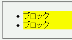
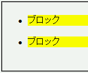

リストアイテム要素の内容物の末端にブロックボックスを生成する設定（display:block;）にしたインライン要素を置くと、リストアイテム要素のボックスの直後に空行が発生する。。
<ul> <li><span style="display:block; margin:0; background:yellow;"> ブロック</span></li> <li><span style="display:block; margin:0; background:yellow;"> ブロック</span></li> </ul>
li要素の内部にあるspan要素はブロックボックスを生成します。
Netscape7.1標準モード
WinIE6.0標準モード
以下に不具合を回避する方法を挙げます。
display:block; を指定した要素にしない。
<ul> <li><span style="display:block;">ブロック</span> インライン</li> <li><span style="display:block;">ブロック</span> インライン</li> </ul>
display:block; を指定した要素のwidthプロパティやheightプロパティを明示する（WinIEバグ070に注意）。
<ul> <li style="width:80%;"><span style="display:block;"> ブロック</span></li> <li style="width:80%;"><span style="display:block;"> ブロック</span></li> </ul>
<ul> <li><span style="display:block; background:yellow;">ブロック</span></li><li> <span style="display:block; background:yellow;">ブロック</span></li></ul>
<ul> <li style="padding:1px;"><span style="display:block;"> ブロック</span></li> <li style="border:1px solid blue;"><span style="display:block;"> ブロック</span></li> </ul>
WinIE6.0の標準モードと互換モードで不具合の発生を確認しました。